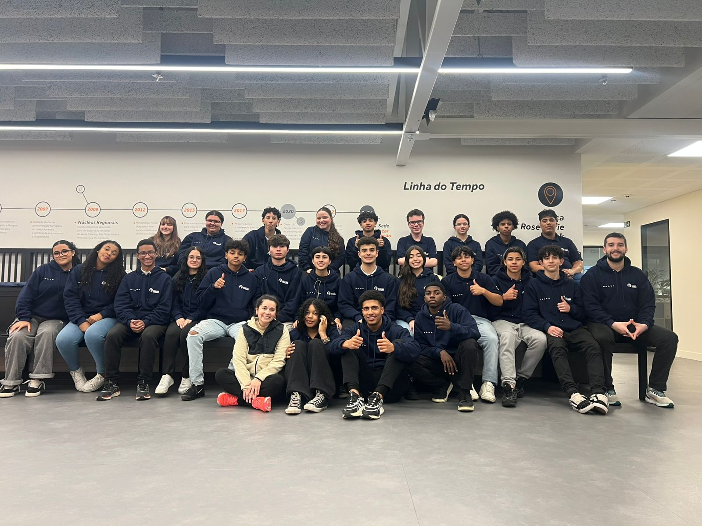

Alunos
Conheça os integrantes da turma de T.I 2025:
Este é um site repleto de memórias, curiosidades e registros de uma das primeiras turmas de T.I do Projeto Pescar em 2025.
Feito para eternizar os momentos e conquistas da turma.
O Projeto Pescar nasceu em 1976, em Porto Alegre (RS), com o propósito de oferecer oportunidades de transformação social por meio da educação e inclusão no mercado de trabalho. Criado por iniciativa de Francisco Gross, o projeto começou com cursos profissionalizantes dentro das empresas, preparando jovens em situação de vulnerabilidade social para o futuro.
Ao longo dos anos, o Projeto Pescar expandiu-se para diversas áreas e estados do Brasil, formando milhares de jovens que desenvolveram não apenas competências técnicas, mas também valores humanos, cidadania e responsabilidade social.
Em 2025, nasceu a primeira turma de Tecnologia da Informação (T.I) da Fundação Projeto Pescar, unindo aprendizado técnico, trabalho em equipe e crescimento pessoal em uma jornada de seis meses marcante.
Durante essa jornada, os alunos exploraram não apenas o universo da tecnologia, mas também vivências que envolveram cooperação, superação e criatividade. Cada atividade representou uma etapa do crescimento coletivo da turma, marcada por momentos de aprendizado, risadas e conquistas que ficarão guardados na memória de todos.
As apresentações abaixo foram desenvolvidas pela própria turma, refletindo toda a trajetória, dedicação e união vivida dentro do Projeto Pescar. São registros que simbolizam uma história de evolução e amizade.
Conheça os integrantes da turma de T.I 2025: